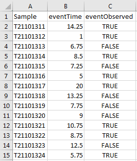

Suppl. Ch. 2 - Import and Tidy Data
Gabriel Odom
2020-02-26
Supplement2-Importing_Data.Rmd1. Overview
This vignette is the second chapter in the “Pathway Significance Testing with pathwayPCA” workflow, providing a detailed perspective to the Import Data section of the Quickstart Guide. This vignette will discuss using the the read_gmt function to import Gene Matrix Transposed (.gmt) pathway collection files as a list object with class pathwayCollection. Also, we will discuss importing assay and response data, and how to make your assay data tidy. For our pathway analysis to be meaningful, we need gene expression data (from a microarray or something similar), corresponding phenotype information (such as weight, type of cancer, or survival time and censoring indicator), and a pathway collection.
Before we move on, we will outline our steps. After reading this vignette, you should be able to
- Import a
.gmtfile and save the pathways stored therein as apathwayCollectionobject using theread_gmtfunction. - Import an assay
.csvfile with theread_csvfunction from thereadrpackage, and transpose this data frame into “tidy” form with theTransposeAssayfunction. - Import phenotype information stored in a
.csvfile, and join (merge) it to the assay data frame with theinner_joinfunction from thedplyrpackage.
First, load the pathwayPCA package and the tidyverse package suite.
library(tidyverse)
# Set tibble data frame print options
options(tibble.max_extra_cols = 10)
library(pathwayPCA)2. GMT Files
The .gmt format is a commonly used file format for storing pathway collections. Lists of pathways in the Molecular Signatures Database (MSigDB) can be downloaded from the MSigDB Collections page.
2.1 GMT Format Description
GMT-formatted files follow a very specific set of rules:
- Each row of the file represents a pathway, and only one pathway is allowed per line.
- The first entry in each row is the pathway name; e.g.
"KEGG_STEROID_BIOSYNTHESIS". - The second entry in each row is an optional brief description of the pathway; e.g.
"http://www.broadinstitute.org/gsea/msigdb/cards/KEGG_STEROID_BIOSYNTHESIS". - The third to the last entry on each row are the gene names in the pathway; e.g.
"SOAT1" "LSS" "SQLE" "EBP" "CYP51A1" "DHCR7" "CYP27B1" "DHCR24" "HSD17B7" "MSMO1" "FDFT1" "SC5DL" "LIPA" "CEL" "TM7SF2" "NSDHL" "SOAT2". - Each entry in each line is seperated by a tab.
2.2 Import GMT files with read_gmt
Based on the clearly-organized .gmt file format, we were able to write a very fast function to read .gmt files into R. The read_gmt function takes in a path specifying where your .gmt file is stored, and outputs a pathways list.
gmt_path <- system.file("extdata", "c2.cp.v6.0.symbols.gmt",
package = "pathwayPCA", mustWork = TRUE)
cp_pathwayCollection <- read_gmt(gmt_path, description = TRUE)We now carefully discuss the form of this information. This cp_pathwayCollection object has class pathwayCollection and contains the following components:
-
pathways: A list of character vectors. Each character vector should contain a subset of the names of the -Omes measured in your assay data frame. These pathways should not be too short, otherwise we devolve the problem into simply testing individual genes. ThepathwayPCApackage requires each pathway to have a minimum of three genes recorded in the assay data frame.
Important: some protein set lists have proteins markers recorded as character numerics (e.g. “3”), so make sure the feature names of your assay have an overlap with the gene or protein names in the pathwayCollection list. Ensure that there is a non-empty overlap between the gene names in the pathways list and the feature names of the assay. Not every gene in your assay data frame will be in the pathways list, and not every gene in each pathway will have a corresponding measurement in the assay data frame. However, for meaningful results, there should be a significant overlap between the genes measured in the assay data frame and the gene names stored in the pathways list. If your pathways list has very few matching genes in your assay, then your pathway-based analysis results will be significantly degraded. Make sure your pathways list and assay data are compatible.
-
TERMS: A character vector comprised of the proper name of each pathway in the pathway collection. -
description: (OPTIONAL) A character vector the same length as the pathways list with descriptive information. For instance, the.gmtfile included with this package has hyperlinks to the MSigDB description card for that pathway in this field. This field will be imported by theread_gmtfunction whendescription = TRUE(it defaults toFALSE). -
setsize: the number of genes originally recorded in each pathway, stored as an integer vector. NOTE: this information is calculated and added to the pathways list atOmics-class object creation (later in the workflow). This information is useful to measure the ratio of the number of genes from each pathway recorded in your assay to the number of genes defined to be in that pathway. For each pathway, this ratio should be at least 0.5 for best pathway analysis results.
The object itself has the following structure:
cp_pathwayCollection
#> Object with Class(es) 'pathwayCollection', 'list' [package 'pathwayPCA'] with 3 elements:
#> $ pathways :List of 1329
#> $ TERMS : chr [1:1329] "KEGG_GLYCOLYSIS_GLUCONEOGENESIS" ...
#> $ description: chr [1:1329] "http://www.broadinstitute.org/gsea/msigdb/cards/KEGG_GLYCOLYSIS_GLUCONEOGENESIS" ...This object will be the list supplied to the pathwayCollection_ls argument in the CreateOmics function.
2.3 Creating Your Own pathwayCollection List
Additionally, you can create a pathwayCollection object from scratch with the CreatePathwayCollection function. This may be useful to users who have their pathway information stored in some form other than a .gmt file. You must supply a list of vectors of gene names to the pathways argument, and a vector of the proper names of each pathway to the TERMS argument. You could also store any other pertinant pathway information by passing a <name> = <value> pair to this function.
myPathways_ls <- list(
pathway1 = c("Gene1", "Gene2"),
pathway2 = c("Gene3", "Gene4", "Gene5"),
pathway3 = "Gene6"
)
myPathway_names <- c(
"KEGG_IMPORTANT_PATHWAY_1",
"KEGG_IMPORTANT_PATHWAY_2",
"SOME_OTHER_PATHWAY"
)
CreatePathwayCollection(
sets_ls = myPathways_ls,
TERMS = myPathway_names,
website = "URL_TO_PATHWAY_CITATION"
)
#> Object with Class(es) 'pathwayCollection', 'list' [package 'pathwayPCA'] with 3 elements:
#> $ pathways:List of 3
#> $ TERMS : chr [1:3] "KEGG_IMPORTANT_PATHWAY_1" ...
#> $ website : chr "URL_TO_PATHWAY_CITATION"2.4 Importing a Pathway Collection from Wikipathways
To download a .gmt file from Wikipathways, we recommend the R package rWikiPathways. From their vignette:
WikiPathways also provides a monthly data release archived at http://data.wikipathways.org. The archive includes GPML, GMT and SVG collections by organism and timestamped. There’s an R function for grabbing files from the archive…
downloadPathwayArchive()This will simply open the archive in your default browser so you can look around (in case you don’t know what you are looking for). By default, it opens to the latest collection of GPML files. However, if you provide an organism, then it will download that file to your current working directory or specified destpath. For example, here’s how you’d get the latest GMT file for mouse:
downloadPathwayArchive(organism = "Mus musculus", format = "gmt")And if you might want to specify an archive date so that you can easily share and reproduce your script at any time in the future and get the same result. Remember, new pathways are being added to WikiPathways every month and existing pathways are improved continuously!
downloadPathwayArchive(date = "20171010", organism = "Mus musculus", format = "gmt")
2.4 Writing a pathwayCollection Object to a .gmt File
Finally, we can save the pathwayCollection object we just created via the write_gmt() function:
3. Import and Tidy an Assay Matrix
We assume that the assay data (e.g. transcriptomic data) is either in an Excel file or flat text file. For example, your data may look like this:

In this data set, the columns are individual samples. The values in each row are the -Omic expression measurements for the gene in that row.
3.1 Import with readr
To import data files in .csv (comma-separated), .fwf (fixed-width), or .txt (tab-delimited) format, we recommend the readr package. You can .csv files with the read_csv function, fixed-width files with read_fwf, and general delimited files with read_delim. These functions are all from the readr package. Additionally, for data in .xls or .xlsx format, we recommend the readxl package. We would read a .csv data file via
assay_path <- system.file("extdata", "ex_assay_subset.csv",
package = "pathwayPCA", mustWork = TRUE)
assay_df <- read_csv(assay_path)
#> Warning: Missing column names filled in: 'X1' [1]
#> Parsed with column specification:
#> cols(
#> .default = col_double(),
#> X1 = col_character()
#> )
#> See spec(...) for full column specifications.The read_csv function warns us that the name of the first column is missing, but then automatically fills it in as X1. Further, this function prints messages to the screen informing you of the assumptions it makes when importing your data. Specifically, this message tells us that all the imported data is numeric (.default = col_double()) except for the gene name column (X1 = col_character()).
Let’s inspect our assay data frame. Note that the gene names were imported as a character column, as shown by the <chr> tag at the top of the first column. This data import step stored the row names (the gene names) as the first column, and preserved the column names (sample labels) of the data.
assay_df
#> # A tibble: 17 x 37
#> X1 T21101311 T21101312 T21101313 T21101314 T21101315 T21101316 T21101317
#> <chr> <dbl> <dbl> <dbl> <dbl> <dbl> <dbl> <dbl>
#> 1 SOAT1 5.37 5.52 5.89 5.62 5.49 5.58 5.32
#> 2 LSS 9.77 9.78 8.11 8.67 9.83 9.85 10.0
#> 3 SQLE 7.74 8.06 7.00 8.59 8.13 8.55 6.99
#> 4 EBP 4.68 5.12 5.78 5.64 5.73 5.13 5.86
#> 5 CYP5… 8.27 8.21 8.20 8.07 9.38 9.40 8.08
#> 6 DHCR7 8.32 8.33 8.39 8.64 8.15 8.71 9.25
#> 7 CYP2… 6.78 6.47 6.57 6.47 6.43 6.56 6.86
#> 8 DHCR… 4.70 5.06 4.89 4.98 5.03 4.87 4.72
#> 9 HSD1… 7.63 7.63 8.15 8.13 7.70 7.75 7.88
#> 10 MSMO1 7.60 7.33 7.61 5.56 6.30 7.77 6.97
#> 11 FDFT1 10.5 10.6 10.2 10.4 9.99 9.78 10.7
#> 12 SC5DL 9.53 9.35 9.82 9.70 9.50 9.34 9.30
#> 13 LIPA 8.17 6.75 7.36 7.17 6.82 7.82 6.88
#> 14 CEL 10.5 9.85 10.0 9.80 10.6 9.66 10.2
#> 15 TM7S… 9.83 10.5 9.83 10.0 10.3 9.46 9.76
#> 16 NSDHL 6.88 7.47 7.75 6.16 5.94 6.74 6.32
#> 17 SOAT2 7.79 7.68 8.05 7.79 7.74 7.52 8.04
#> # … with 29 more variables: T21101318 <dbl>, T21101319 <dbl>, T21101320 <dbl>,
#> # T21101321 <dbl>, T21101322 <dbl>, T21101323 <dbl>, T21101324 <dbl>,
#> # T21101325 <dbl>, T21101326 <dbl>, T21101327 <dbl>, …3.2 Tidy the Assay Data Frame
The assay input to the pathwayPCA package must be in tidy data format. The “Tidy Data” format requires that each observation be its own row, and each measurement its own column. This means that we must transpose our assay data frame, while preserving the row and column names.
To do this, we can use the TransposeAssay function. This function takes in a data frame as imported by the three readr functions based on data in a format similar to that shown above: genes are the rows, gene names are the first column, samples are stored in the subsequent columns, and all values in the assay (other than the gene names in the first column) are numeric.
(assayT_df <- TransposeAssay(assay_df))
#> # A tibble: 36 x 18
#> Sample SOAT1 LSS SQLE EBP CYP51A1 DHCR7 CYP27B1 DHCR24 HSD17B7 MSMO1
#> <chr> <dbl> <dbl> <dbl> <dbl> <dbl> <dbl> <dbl> <dbl> <dbl> <dbl>
#> 1 T2110… 5.37 9.77 7.74 4.68 8.27 8.32 6.78 4.70 7.63 7.60
#> 2 T2110… 5.52 9.78 8.06 5.12 8.21 8.33 6.47 5.06 7.63 7.33
#> 3 T2110… 5.89 8.11 7.00 5.78 8.20 8.39 6.57 4.89 8.15 7.61
#> 4 T2110… 5.62 8.67 8.59 5.64 8.07 8.64 6.47 4.98 8.13 5.56
#> 5 T2110… 5.49 9.83 8.13 5.73 9.38 8.15 6.43 5.03 7.70 6.30
#> 6 T2110… 5.58 9.85 8.55 5.13 9.40 8.71 6.56 4.87 7.75 7.77
#> 7 T2110… 5.32 10.0 6.99 5.86 8.08 9.25 6.86 4.72 7.88 6.97
#> 8 T2110… 5.49 9.72 7.47 5.16 6.67 7.37 6.70 4.92 7.50 5.48
#> 9 T2110… 5.57 9.88 7.97 5.40 7.91 8.06 6.58 5.06 8.16 7.06
#> 10 T2110… 5.16 9.87 7.42 5.50 7.43 8.68 6.55 4.85 8.20 6.15
#> # … with 26 more rows, and 7 more variables: FDFT1 <dbl>, SC5DL <dbl>,
#> # LIPA <dbl>, CEL <dbl>, TM7SF2 <dbl>, NSDHL <dbl>, SOAT2 <dbl>This transposed data frame has the gene names as the column names and the sample names as a column of character (chr) values. Notice that the data itself is 17 genes measured on 36 samples. Before transposition, we had 37 columns because the feature names were stored in the first column. After transposition, we have 36 rows but 18 columns: the first column stores the sample names. This transposed data frame (after filtering to match the response data) will be supplied to the assayData_df argument in the CreateOmics function. (See the Creating Omics Data Objects vignette for more information on creating Omics-class objects.)
3.3 Subsetting a Tidy Data Frame
If ever we need to extract individual components of a tidy data frame, we can use the assay[row, col] syntax. If we need entire measurements (columns), then we can call the column by name with the assay$ColName syntax. For example,
- If we need the second row of
assayT_df—corresponding to Sample “T21101312”—then we type
assayT_df[2, ]
#> # A tibble: 1 x 18
#> Sample SOAT1 LSS SQLE EBP CYP51A1 DHCR7 CYP27B1 DHCR24 HSD17B7 MSMO1
#> <chr> <dbl> <dbl> <dbl> <dbl> <dbl> <dbl> <dbl> <dbl> <dbl> <dbl>
#> 1 T2110… 5.52 9.78 8.06 5.12 8.21 8.33 6.47 5.06 7.63 7.33
#> # … with 7 more variables: FDFT1 <dbl>, SC5DL <dbl>, LIPA <dbl>, CEL <dbl>,
#> # TM7SF2 <dbl>, NSDHL <dbl>, SOAT2 <dbl>Notice that the tibble object has 1 row and 18 columns. - If we need the third column of assayT_df—corresponding to Gene “LSS”—then we type
assayT_df[, 3]
#> # A tibble: 36 x 1
#> LSS
#> <dbl>
#> 1 9.77
#> 2 9.78
#> 3 8.11
#> 4 8.67
#> 5 9.83
#> 6 9.85
#> 7 10.0
#> 8 9.72
#> 9 9.88
#> 10 9.87
#> # … with 26 more rowsThis tibble object has 36 rows and 1 column. - If we need the intersection of these two (the expression level of Gene “LSS” in Sample “T21101312”), then we type
This output would normally be a 1 by 1 tibble (which isn’t terribly helpful), so we add the drop = TRUE argument to “drop” the dimensions of the table. This gives us a single basic number (scalar). - If we need the third column of assayT_df, but we want the result back as a vector instead of a tibble, we call the column by name:
assayT_df$LSS
#> [1] 9.772752 9.780137 8.109067 8.667270 9.828498 9.852128 10.004496
#> [8] 9.719076 9.883177 9.871709 7.892335 8.263840 8.215201 9.133894
#> [15] 10.116890 9.107010 9.820948 9.057552 9.268507 9.382549 7.852329
#> [22] 8.585521 8.949471 8.931112 9.597493 9.657331 7.800871 9.858547
#> [29] 9.758955 8.383229 10.562910 9.815668 10.013560 11.094211 9.217539
#> [36] 10.667547
3.4 Data from a SummarizedExperiment Object
Oftentimes, genomic experiment data is stored in a SummarizedExperiment-class object. If your assay and response data are stored in such an object, use the SE2Tidy() function to extract the necessary information and return it as a tidy data frame. Because SummarizedExperiment objects can have more than one assay, you must specify the index for the assay of your choice with the whichAssay argument. Here is an example using the airway data:
library(SummarizedExperiment)
#> Loading required package: GenomicRanges
#> Loading required package: stats4
#> Loading required package: BiocGenerics
#> Loading required package: parallel
#>
#> Attaching package: 'BiocGenerics'
#> The following objects are masked from 'package:parallel':
#>
#> clusterApply, clusterApplyLB, clusterCall, clusterEvalQ,
#> clusterExport, clusterMap, parApply, parCapply, parLapply,
#> parLapplyLB, parRapply, parSapply, parSapplyLB
#> The following objects are masked from 'package:dplyr':
#>
#> combine, intersect, setdiff, union
#> The following objects are masked from 'package:stats':
#>
#> IQR, mad, sd, var, xtabs
#> The following objects are masked from 'package:base':
#>
#> anyDuplicated, append, as.data.frame, basename, cbind, colnames,
#> dirname, do.call, duplicated, eval, evalq, Filter, Find, get, grep,
#> grepl, intersect, is.unsorted, lapply, Map, mapply, match, mget,
#> order, paste, pmax, pmax.int, pmin, pmin.int, Position, rank,
#> rbind, Reduce, rownames, sapply, setdiff, sort, table, tapply,
#> union, unique, unsplit, which, which.max, which.min
#> Loading required package: S4Vectors
#>
#> Attaching package: 'S4Vectors'
#> The following objects are masked from 'package:dplyr':
#>
#> first, rename
#> The following object is masked from 'package:tidyr':
#>
#> expand
#> The following object is masked from 'package:base':
#>
#> expand.grid
#> Loading required package: IRanges
#>
#> Attaching package: 'IRanges'
#> The following objects are masked from 'package:dplyr':
#>
#> collapse, desc, slice
#> The following object is masked from 'package:purrr':
#>
#> reduce
#> The following object is masked from 'package:grDevices':
#>
#> windows
#> Loading required package: GenomeInfoDb
#> Loading required package: Biobase
#> Welcome to Bioconductor
#>
#> Vignettes contain introductory material; view with
#> 'browseVignettes()'. To cite Bioconductor, see
#> 'citation("Biobase")', and for packages 'citation("pkgname")'.
#> Loading required package: DelayedArray
#> Loading required package: matrixStats
#>
#> Attaching package: 'matrixStats'
#> The following objects are masked from 'package:Biobase':
#>
#> anyMissing, rowMedians
#> The following object is masked from 'package:dplyr':
#>
#> count
#> Loading required package: BiocParallel
#>
#> Attaching package: 'DelayedArray'
#> The following objects are masked from 'package:matrixStats':
#>
#> colMaxs, colMins, colRanges, rowMaxs, rowMins, rowRanges
#> The following object is masked from 'package:purrr':
#>
#> simplify
#> The following objects are masked from 'package:base':
#>
#> aperm, apply, rowsum
data(airway, package = "airway")
airway_df <- SE2Tidy(airway)Now we can look at a nice summary of the tidied assay and response data. This will drop all of the gene-specific metadata, as well as any experiment metadata. However, pathwayPCA can’t make use of this data anyway, so we haven’t lost much.
airway_df[, 1:20]
#> Row.names SampleName cell dex albut Run avgLength Experiment
#> 1 SRR1039508 GSM1275862 N61311 untrt untrt SRR1039508 126 SRX384345
#> 2 SRR1039509 GSM1275863 N61311 trt untrt SRR1039509 126 SRX384346
#> 3 SRR1039512 GSM1275866 N052611 untrt untrt SRR1039512 126 SRX384349
#> 4 SRR1039513 GSM1275867 N052611 trt untrt SRR1039513 87 SRX384350
#> 5 SRR1039516 GSM1275870 N080611 untrt untrt SRR1039516 120 SRX384353
#> 6 SRR1039517 GSM1275871 N080611 trt untrt SRR1039517 126 SRX384354
#> 7 SRR1039520 GSM1275874 N061011 untrt untrt SRR1039520 101 SRX384357
#> 8 SRR1039521 GSM1275875 N061011 trt untrt SRR1039521 98 SRX384358
#> Sample BioSample ENSG00000000003 ENSG00000000005 ENSG00000000419
#> 1 SRS508568 SAMN02422669 679 0 467
#> 2 SRS508567 SAMN02422675 448 0 515
#> 3 SRS508571 SAMN02422678 873 0 621
#> 4 SRS508572 SAMN02422670 408 0 365
#> 5 SRS508575 SAMN02422682 1138 0 587
#> 6 SRS508576 SAMN02422673 1047 0 799
#> 7 SRS508579 SAMN02422683 770 0 417
#> 8 SRS508580 SAMN02422677 572 0 508
#> ENSG00000000457 ENSG00000000460 ENSG00000000938 ENSG00000000971
#> 1 260 60 0 3251
#> 2 211 55 0 3679
#> 3 263 40 2 6177
#> 4 164 35 0 4252
#> 5 245 78 1 6721
#> 6 331 63 0 11027
#> 7 233 76 0 5176
#> 8 229 60 0 7995
#> ENSG00000001036 ENSG00000001084 ENSG00000001167
#> 1 1433 519 394
#> 2 1062 380 236
#> 3 1733 595 464
#> 4 881 493 175
#> 5 1424 820 658
#> 6 1439 714 584
#> 7 1359 696 360
#> 8 1109 704 2694. Import and Join Response Data
We now have an appropriate pathways list and a tidy -Omics assay data frame. All we need now is some response data. Let’s imagine that your phenotype data looks something like this:

We next import this response information. We can use the read_csv function once again:
pInfo_path <- system.file("extdata", "ex_pInfo_subset.csv",
package = "pathwayPCA", mustWork = TRUE)
pInfo_df <- read_csv(pInfo_path)
#> Parsed with column specification:
#> cols(
#> Sample = col_character(),
#> eventTime = col_double(),
#> eventObserved = col_logical()
#> )This phenotype data frame has a column for the sample labels (Sample) and the response information. In this case, our response is a survival response with an event time and observation indicator.
pInfo_df
#> # A tibble: 36 x 3
#> Sample eventTime eventObserved
#> <chr> <dbl> <lgl>
#> 1 T21101311 14.2 TRUE
#> 2 T21101312 1 TRUE
#> 3 T21101313 6.75 FALSE
#> 4 T21101314 8.5 TRUE
#> 5 T21101315 7.25 FALSE
#> 6 T21101316 5 TRUE
#> 7 T21101317 20 TRUE
#> 8 T21101318 13.2 FALSE
#> 9 T21101319 7.75 FALSE
#> 10 T21101320 9 FALSE
#> # … with 26 more rowsThis pInfo data frame has the sample names as a column of character values, just like the transposed assay data frame. This is crucially important for the “joining” step. We can use the inner_join function from the dplyr library to retain only the rows of the assayT_df data frame which have responses in the pInfo data frame and vice versa. This way, every response in the phenotype data has matching genes in the assay, and every recorded gene in the assay matches a response in the phenotype data.
joinedExperiment_df <- inner_join(pInfo_df, assayT_df, by = "Sample")
joinedExperiment_df
#> # A tibble: 36 x 20
#> Sample eventTime eventObserved SOAT1 LSS SQLE EBP CYP51A1 DHCR7 CYP27B1
#> <chr> <dbl> <lgl> <dbl> <dbl> <dbl> <dbl> <dbl> <dbl> <dbl>
#> 1 T2110… 14.2 TRUE 5.37 9.77 7.74 4.68 8.27 8.32 6.78
#> 2 T2110… 1 TRUE 5.52 9.78 8.06 5.12 8.21 8.33 6.47
#> 3 T2110… 6.75 FALSE 5.89 8.11 7.00 5.78 8.20 8.39 6.57
#> 4 T2110… 8.5 TRUE 5.62 8.67 8.59 5.64 8.07 8.64 6.47
#> 5 T2110… 7.25 FALSE 5.49 9.83 8.13 5.73 9.38 8.15 6.43
#> 6 T2110… 5 TRUE 5.58 9.85 8.55 5.13 9.40 8.71 6.56
#> 7 T2110… 20 TRUE 5.32 10.0 6.99 5.86 8.08 9.25 6.86
#> 8 T2110… 13.2 FALSE 5.49 9.72 7.47 5.16 6.67 7.37 6.70
#> 9 T2110… 7.75 FALSE 5.57 9.88 7.97 5.40 7.91 8.06 6.58
#> 10 T2110… 9 FALSE 5.16 9.87 7.42 5.50 7.43 8.68 6.55
#> # … with 26 more rows, and 10 more variables: DHCR24 <dbl>, HSD17B7 <dbl>,
#> # MSMO1 <dbl>, FDFT1 <dbl>, SC5DL <dbl>, LIPA <dbl>, CEL <dbl>, TM7SF2 <dbl>,
#> # NSDHL <dbl>, SOAT2 <dbl>This requires you to have a key column in both data frames with the same name. If the key column was called “Sample” in the pInfo_df data set but “SampleID” in the assay, then the by argument should be changed to by = c("Sample" = "SampleID"). It’s much nicer to just keep them with the same names, however. Moreover, it is vitally important that you check your sample IDs. Obviously the recorded genetic data should pair with the phenotype information, but it is your responsibility as the user to confirm that the assay rows match the correct responses. You are ultimately responsible to defend the integrity of your data and to use this package properly.
5. Example Tidy Assay and Pathways List
Included in this package, we have a small tidy assay and corresponding gene subset list. We will load and inspect this assay. This data set has 656 gene expression measurements on 250 colon cancer patients. Further notice that the assay and overall survival response information have already been matched.
data("colonSurv_df")
colonSurv_df
#> # A tibble: 250 x 659
#> sampleID OS_time OS_event JUN SOS2 PAK3 RAF1 PRKCB BTC SHC1 PRKCA
#> <chr> <dbl> <int> <dbl> <dbl> <dbl> <dbl> <dbl> <dbl> <dbl> <dbl>
#> 1 subj1 64.9 0 9.29 5.48 8.21 8.03 5.49 6.65 8.26 8.94
#> 2 subj2 59.8 0 9.13 6.35 8.33 7.94 6.26 7.02 8.39 9.61
#> 3 subj3 62.4 0 9.37 5.67 7.82 7.74 6.05 7.52 8.69 8.40
#> 4 subj4 54.5 0 10.6 4.94 8.79 7.64 5.37 6.87 7.81 9.80
#> 5 subj5 46.3 1 8.70 5.60 8.75 8.05 6.07 6.49 8.45 8.21
#> 6 subj6 55.9 0 9.78 5.36 7.56 8.07 5.90 6.39 8.87 8.22
#> 7 subj7 58.0 0 9.22 5.05 8.20 7.80 5.55 6.86 8.28 8.97
#> 8 subj8 54.0 0 10.3 5.33 7.82 7.89 6.27 6.25 8.66 9.71
#> 9 subj9 0.427 1 10.8 5.07 7.63 7.69 5.48 7.57 8.36 9.69
#> 10 subj10 41.4 0 9.52 5.50 7.48 7.53 5.71 7.33 8.54 8.14
#> # … with 240 more rows, and 648 more variables: ELK1 <dbl>, NRG1 <dbl>,
#> # PAK2 <dbl>, MTOR <dbl>, PAK4 <dbl>, MAP2K4 <dbl>, EIF4EBP1 <dbl>,
#> # BAD <dbl>, PRKCG <dbl>, NRG3 <dbl>, …We also have a small list of 15 pathways which correspond to our example colon cancer assay. To create a toy example, we have curated this artificial pathways list to include seven significant pathways and eight non-significant pathways.
data("colon_pathwayCollection")
colon_pathwayCollection
#> Object with Class(es) 'pathwayCollection', 'list' [package 'pathwayPCA'] with 2 elements:
#> $ pathways:List of 15
#> $ TERMS : chr [1:15] "KEGG_PENTOSE_PHOSPHATE_PATHWAY" ...The pathways list and tidy assay (with matched phenotype information) are all the information we need to create an Omics-class data object.
6. Review
We now summarize our steps so far. We have
- Imported a
.gmtfile and saved the pathways stored therein as apathwayCollectionobject using theread_gmtfunction. - Imported an assay
.csvfile with theread_csvfunction from thereadrpackage, and transposed this data frame into “tidy” form with theTransposeAssayfunction. - Imported a phenotype information
.csvfile, and joined it to the assay data frame with theinner_joinfunction from thedplyrpackage.
Now we are prepared to create our first Omics-class object for analysis with either AES-PCA or Supervised PCA. Please read vignette chapter 3: Creating Omics Data Objects.
Here is the R session information for this vignette:
sessionInfo()
#> R version 3.6.2 (2019-12-12)
#> Platform: x86_64-w64-mingw32/x64 (64-bit)
#> Running under: Windows 7 x64 (build 7601) Service Pack 1
#>
#> Matrix products: default
#>
#> locale:
#> [1] LC_COLLATE=English_United States.1252
#> [2] LC_CTYPE=English_United States.1252
#> [3] LC_MONETARY=English_United States.1252
#> [4] LC_NUMERIC=C
#> [5] LC_TIME=English_United States.1252
#>
#> attached base packages:
#> [1] parallel stats4 stats graphics grDevices utils datasets
#> [8] methods base
#>
#> other attached packages:
#> [1] SummarizedExperiment_1.16.1 DelayedArray_0.12.1
#> [3] BiocParallel_1.20.1 matrixStats_0.55.0
#> [5] Biobase_2.46.0 GenomicRanges_1.38.0
#> [7] GenomeInfoDb_1.22.0 IRanges_2.20.1
#> [9] S4Vectors_0.24.1 BiocGenerics_0.32.0
#> [11] pathwayPCA_1.1.4 forcats_0.4.0
#> [13] stringr_1.4.0 dplyr_0.8.3
#> [15] purrr_0.3.3 readr_1.3.1
#> [17] tidyr_1.0.0 tibble_2.1.3
#> [19] ggplot2_3.2.1 tidyverse_1.3.0
#>
#> loaded via a namespace (and not attached):
#> [1] httr_1.4.1 jsonlite_1.6 splines_3.6.2
#> [4] modelr_0.1.5 assertthat_0.2.1 GenomeInfoDbData_1.2.2
#> [7] cellranger_1.1.0 yaml_2.2.0 pillar_1.4.3
#> [10] backports_1.1.5 lattice_0.20-38 glue_1.3.1
#> [13] digest_0.6.23 XVector_0.26.0 rvest_0.3.5
#> [16] colorspace_1.4-1 htmltools_0.4.0 Matrix_1.2-18
#> [19] pkgconfig_2.0.3 broom_0.5.3 haven_2.2.0
#> [22] zlibbioc_1.32.0 scales_1.1.0 generics_0.0.2
#> [25] withr_2.1.2 lazyeval_0.2.2 cli_2.0.0
#> [28] survival_3.1-8 magrittr_1.5 crayon_1.3.4
#> [31] readxl_1.3.1 memoise_1.1.0 evaluate_0.14
#> [34] fs_1.3.1 fansi_0.4.0 nlme_3.1-143
#> [37] MASS_7.3-51.5 xml2_1.2.2 tools_3.6.2
#> [40] hms_0.5.2 lifecycle_0.1.0 munsell_0.5.0
#> [43] reprex_0.3.0 compiler_3.6.2 pkgdown_1.4.1
#> [46] rlang_0.4.2 grid_3.6.2 RCurl_1.95-4.12
#> [49] rstudioapi_0.10 bitops_1.0-6 rmarkdown_2.0
#> [52] gtable_0.3.0 lars_1.2 DBI_1.1.0
#> [55] R6_2.4.1 lubridate_1.7.4 knitr_1.26
#> [58] utf8_1.1.4 zeallot_0.1.0 rprojroot_1.3-2
#> [61] desc_1.2.0 stringi_1.4.3 Rcpp_1.0.3
#> [64] vctrs_0.2.1 dbplyr_1.4.2 tidyselect_0.2.5
#> [67] xfun_0.11